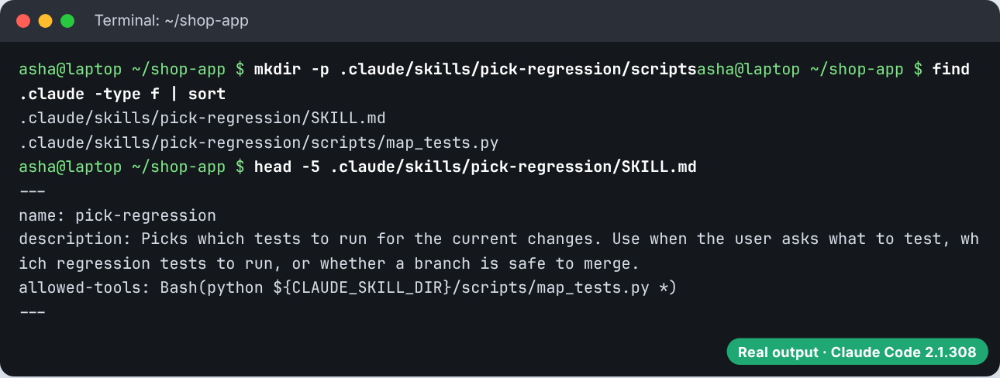
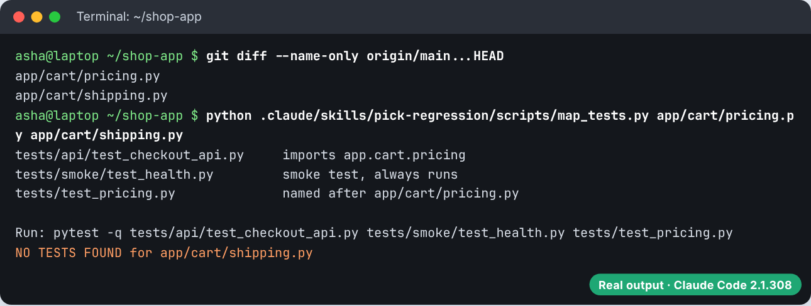
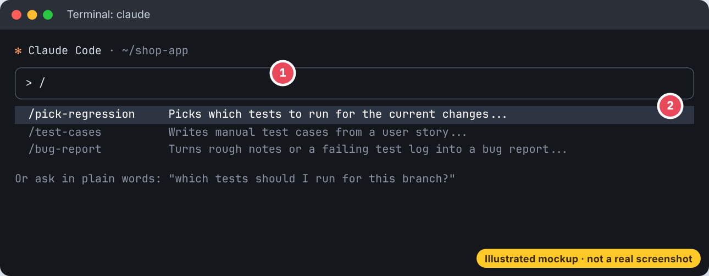
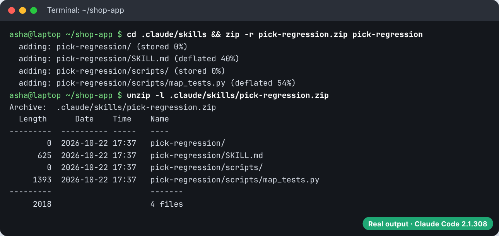
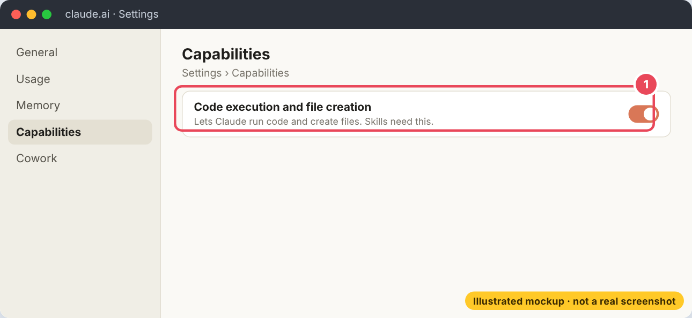
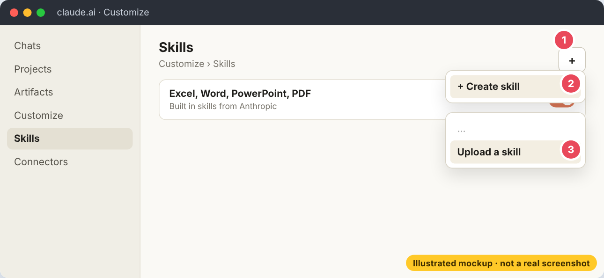
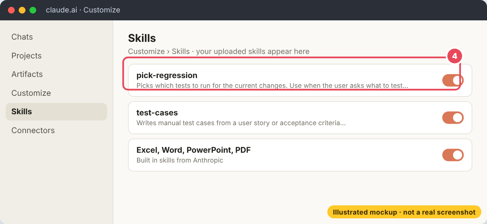

Skills: Build SKILL.md Step by Step
Build a skill from an empty folder with a screenshot for every step, learn where skills live and how they are named, every front matter field, arguments and live command output, supporting files and scripts, who can start a skill, ready to copy skills for a QA engineer's day and a developer's day, and how to upload a skill to claude.ai.
A skill is a recipe card for Claude. You write the steps once in a file called SKILL.md, and Claude follows the card whenever that job comes up.
🧰What a skill is
A skill is a folder with a file called SKILL.md. The top of the file has a short description of when to use it. The rest has the steps. Claude Code, claude.ai and the API all use this format.
Skills use progressive disclosure, which means Claude reads them in layers and only as far as it needs:
| Level | When it loads | Size |
|---|---|---|
| 1. name and description | always, at start | about 100 tokens per skill |
2. the body of SKILL.md | when the skill is used | keep it under 5,000 tokens |
| 3. other files and scripts | only if the steps point to them | scripts run, only their output is read |
🚀Build your first skill in three steps
- Make a folder named after the skill in
~/.claude/skills/(just for you) or.claude/skills/(for the team). - Create
SKILL.mdinside it with adescriptionat the top and the steps below. - Start Claude Code and either ask naturally or type
/and the folder name.
--- description: Summarizes uncommitted changes and flags anything risky. Use when the user asks what changed, wants a commit message, or asks to review their diff. --- ## Current changes !`git diff HEAD` ## Instructions Summarize the changes above in two or three bullet points, then list any risks you notice such as missing error handling, hardcoded values, or tests that need updating. If the diff is empty, say there are no uncommitted changes.
mkdir -p ~/.claude/skills/summarize-changes # save the file above as ~/.claude/skills/summarize-changes/SKILL.md claude > what did I change? # Claude picks the skill because the description matches > /summarize-changes # or run it yourself by name
Claude answers with two or three bullets about your real diff and a list of risks. The git diff was pasted into the skill before Claude read it.
The line !`git diff HEAD` is dynamic context: Claude Code runs the command first and pastes the output into the skill, so Claude reads your real changes.
📸Set up a skill in Claude Code, with screenshots
Here is the whole setup for a real QA skill, pick-regression, one screen at a time. The terminal pictures are real output from a real run. Use the numbers or the Back and Next buttons to move between steps.
- Step 1. Check Claude Code is installed
Open a terminal in your project folder and run
✅ Real terminal outputclaude --version. Any recent version works. Chapter 4 shows how to install it.
- Step 2. Make the folder and add the files
Create
✅ Real terminal output.claude/skills/pick-regression/with ascriptsfolder inside. SaveSKILL.mdandscripts/map_tests.pyfrom the QA part of this chapter.headshows the front matter is at the very top.
- Step 3. Try the script on its own first
Run the script by hand on the files your branch changed. If it works here, it will work when Claude runs it. Notice it flags
✅ Real terminal outputshipping.pybecause no test covers it.
- Step 4. Start Claude Code and call the skill
Run
🎨 Illustrated mockup, the real screen may look a little differentclaude, type/and choose/pick-regressionfrom the list. Or just ask "which tests should I run for this branch?" and Claude picks the skill from its description.
SKILL.md in capitals, the front matter starts on line 1 with ---, and the folder is inside .claude/skills/. Run /skills to see every skill Claude Code found.📍Where skills live and how they get their name
| Where | Path | Who gets it |
|---|---|---|
| Personal | ~/.claude/skills/<name>/SKILL.md | you, in every project |
| Project | .claude/skills/<name>/SKILL.md | everyone who clones the repo |
| Plugin | <plugin>/skills/<name>/SKILL.md | anyone who installs it, as /plugin:name |
| Organisation | the managed settings folder | everyone on managed machines |
.claude/skills/
├── weekly-report/
│ └── SKILL.md -> /weekly-report
├── invoice-checker/
│ ├── SKILL.md -> /invoice-checker
│ ├── checklist.md (read only when SKILL.md points to it)
│ └── scripts/totals.py (run, never loaded into context)
└── brand-voice/
└── SKILL.md -> name: brand-voice, user-invocable: false
.claude/commands/deploy.md -> /deploy (older format, still works)skills.md or Skills.md file. Each skill is its own folder, and the file inside is always named SKILL.md in capitals. The older .claude/commands/<name>.md files still work as simple slash commands, but new work should use skills because they can hold extra files.🏷️The front matter: what goes at the top
Every field is optional, but description matters most: Claude reads it to decide when to use the skill. Put the main use first and include the words people actually type.
| Field | What it does |
|---|---|
name | the command name. Defaults to the folder name. |
description | what it does and when to use it. With when_to_use, cut at 1,536 characters in the listing. |
when_to_use | extra trigger phrases or example requests |
argument-hint, arguments | hint shown while typing, and names for each argument |
disable-model-invocation | true: only you can start it |
user-invocable | false: only Claude can use it, hidden from the menu |
allowed-tools | tools Claude may use without asking while the skill runs |
disallowed-tools | tools removed while the skill is active |
model, effort | model and effort level while the skill is active |
context, agent | context: fork runs it in a subagent of the given type |
paths | only use it automatically for matching files |
hooks, shell | hooks while it runs, and bash or powershell for its commands |
Helps with invoicesChecks supplier invoices for arithmetic errors and missing details. Use when the user shares an invoice CSV or PDF, or asks to verify, audit or check an invoice.🔣Arguments and live data
Text typed after the skill name becomes its arguments. Use $ARGUMENTS for all of it, $0, $1 for each word (counting from zero), or names listed in arguments. Lines with !`command` are replaced by the command's output before Claude sees the skill.
--- name: standup description: Writes my daily stand-up update from yesterday's git commits. Use when I ask for a standup, daily update or what I did yesterday. argument-hint: "[name] [date]" arguments: [person, day] --- Write a stand-up update for $person for $day. ## Commits since yesterday !`git log --since=yesterday --pretty=format:"- %s"` ## Open tasks !`cat TODO.md` ## Format Three headings: Done, Doing, Blocked. At most 3 bullets each. Plain English, no commit hashes.
Here is what Claude actually receives once the arguments and the two !`git ...` commands are filled in on a real repository.
Write a stand-up update for Asha for 2026-10-19. ## Commits since yesterday - Add tests for free delivery rule - Fix coupon rounding on checkout ## Open tasks - Add GST to the invoice PDF - Waiting on design for the new cart page ## Format Three headings: Done, Doing, Blocked. At most 3 bullets each. Plain English, no commit hashes.
| Placeholder | Becomes |
|---|---|
$ARGUMENTS | everything typed after the name |
$0, $ARGUMENTS[0] | the first word (use quotes for several words) |
$person | a named argument from arguments: [person, day] |
${CLAUDE_SKILL_DIR} | the skill's own folder, for scripts |
${CLAUDE_PROJECT_DIR} | the project root |
📎Supporting files and scripts
Keep SKILL.md short (under 500 lines) and put detail in other files in the same folder. Link to them from SKILL.md so Claude knows when to open them. Scripts are run, not read, so a long script costs almost nothing in context.
--- name: invoice-checker description: Checks supplier invoices for arithmetic errors and missing details. Use when the user shares an invoice CSV or PDF, or asks to verify, audit or check an invoice. allowed-tools: Bash(python ${CLAUDE_SKILL_DIR}/scripts/totals.py *) --- # Invoice checker 1. If the invoice is a CSV, run: `python ${CLAUDE_SKILL_DIR}/scripts/totals.py <file>` Trust the script's arithmetic. Do not redo the sums yourself. 2. Check the invoice against [checklist.md](checklist.md). 3. Reply with: - RESULT line from the script - each problem as one bullet with the line item and the amount - a two sentence email to the supplier if anything is wrong
# Invoice checklist - Supplier GSTIN present and 15 characters long - Invoice number and date present - Our PO number quoted (format PO-2026-xxxx) - Payment terms are 30 days or more
"""Add up an invoice CSV and check it against the total line. Prints a short report.""" import csv import sys rows = list(csv.DictReader(open(sys.argv[1], encoding="utf-8"))) items = [r for r in rows if r["item"] != "TOTAL"] stated = next(float(r["amount"]) for r in rows if r["item"] == "TOTAL") computed = round(sum(float(r["qty"]) * float(r["rate"]) for r in items), 2) for r in items: line = round(float(r["qty"]) * float(r["rate"]), 2) flag = "" if abs(line - float(r["amount"])) < 0.01 else " <-- line amount does not match qty x rate" print(f'{r["item"]:<18} {r["qty"]:>3} x {float(r["rate"]):>8.2f} = {float(r["amount"]):>9.2f}{flag}') print(f"{'stated total':<34} {stated:>9.2f}") print(f"{'computed total':<34} {computed:>9.2f}") print("RESULT:", "OK" if abs(stated - computed) < 0.01 else f"MISMATCH of {round(stated - computed, 2)}")
item,qty,rate,amount A4 paper ream,10,245.00,2450.00 Stapler,4,180.00,720.00 Whiteboard markers,12,35.50,462.00 TOTAL,,,3632.00
$ python .claude/skills/invoice-checker/scripts/totals.py invoices/inv-001.csv
A4 paper ream 10 x 245.00 = 2450.00 Stapler 4 x 180.00 = 720.00 Whiteboard markers 12 x 35.50 = 462.00 <-- line amount does not match qty x rate stated total 3632.00 computed total 3596.00 RESULT: MISMATCH of 36.0
Because the arithmetic comes from a script, the answer is the same every time. Claude spends its effort on the judgment part: what is wrong and how to word the email to the supplier.
🎛️Who can start a skill
| Front matter | You can start it | Claude can start it | In context before use |
|---|---|---|---|
| (default) | yes | yes | the description |
disable-model-invocation: true | yes | no | nothing |
user-invocable: false | no | yes | the description |
Use disable-model-invocation for anything with side effects, like deploying or sending a message. You do not want Claude deciding to deploy because the code "looks ready".
--- name: deploy description: Deploy the application to production disable-model-invocation: true allowed-tools: Bash(python -m build) Bash(pytest *) --- Deploy $ARGUMENTS to production: 1. Run the test suite. Stop if anything fails. 2. Build the application. 3. Push to the deployment target. 4. Check the health URL and report the result.
--- name: brand-voice description: GreenLeaf brand voice for any customer facing text such as emails, product pages and social posts. user-invocable: false --- - Warm and simple. Write for someone reading on a phone. - Say "plants" and "plant parents", never "SKUs" or "users". - One exclamation mark per message at most. - Sign off as "Team GreenLeaf".
--- name: deep-research description: Research a topic thoroughly in the codebase context: fork agent: Explore --- Research $ARGUMENTS thoroughly: 1. Find relevant files using Glob and Grep 2. Read and analyse the code 3. Summarise findings with specific file references
allowed-tools skips permission prompts while the skill runs. Read the allowed-tools of skills in a repository before you trust it.📅Skills for daily work
The best first skills are jobs you already do every week. Here are two more to copy.
--- name: meeting-actions description: Turns raw meeting notes or a transcript into a clean action list with owners and dates. Use when the user pastes meeting notes, a transcript or asks for action items. --- From the notes the user gave: 1. List decisions made, one line each. 2. List action items as a table: Owner, Task, Due date. If no owner is named, write "Owner needed". If no date, write "No date". 3. List open questions. 4. Write a 3 line summary email the organiser can send. Use the names exactly as written in the notes.
--- name: commit description: Stage and commit the current changes with a clear message disable-model-invocation: true allowed-tools: Bash(git add *) Bash(git commit *) Bash(git status *) Bash(git diff *) --- 1. Run `git status` and `git diff` to see what changed. 2. Write a commit message: a summary line under 60 characters in the imperative ("Add", "Fix", "Remove"), a blank line, then why the change was needed. 3. Stage only files related to this change and commit.
offer-letter (fills the template from a candidate sheet), policy-answer (answers staff questions using the policy files in the folder), and exit-checklist. New joiners get the same quality as the senior staff on day one.🧪Skills for a QA engineer's day
A tester repeats the same kinds of work every day: reading stories, writing test cases, logging bugs and deciding what to retest. Each of those is a perfect skill, because the steps are the same every time and only the input changes.
| Time | Daily task | Skill | You type |
|---|---|---|---|
| 10:00 | Grooming: a new story arrives | test-cases | /test-cases SHOP-142 and paste the story |
| 12:30 | Testing: something breaks | bug-report | "I found a bug" and paste your notes or the log |
| 16:00 | A developer's branch is ready | pick-regression | "which tests should I run for this branch?" |
1. Test cases from a story. The skill asks for positive, negative and boundary cases every time, so nobody forgets the edges. For a rule like "1 to 10 items per order" it adds tests for 0, 1, 2, 9, 10 and 11.
--- name: test-cases description: Writes manual test cases from a user story or acceptance criteria. Use when the user pastes a story, a ticket or acceptance criteria and asks for test cases, test scenarios or a test plan. argument-hint: "[story id]" --- # Write test cases for $ARGUMENTS 1. Read the story. List every rule it states, one line each. 2. For each rule write test cases in this table: | ID | Title | Steps | Test data | Expected result | Type | Type is Positive, Negative or Boundary. 3. For every number limit, add boundary cases just below, on and just above each edge. 4. Add cases for empty input, wrong format and a user without permission. 5. End with "Questions for the product owner": anything the story does not say. Follow the ID format and naming in .claude/rules/qa/test-design.md. Save the table to testcases/$ARGUMENTS.md.
2. Bug reports that anyone can repeat. The template stops Claude from guessing. If you did not say which browser, the report says "Not given" and asks you.
--- name: bug-report description: Turns rough notes, a screenshot description or a failing test log into a clear bug report. Use when the user says they found a bug, pastes an error or asks to log or write up a defect. --- # Write a bug report Fill this template from what the user gave you. Do not invent steps or data. If something is missing, write "Not given" and ask for it at the end. ## Title ## Environment (build, browser or device, test data used) ## Steps to reproduce ## Expected result ## Actual result ## Severity and priority ## Evidence (log lines, screenshot names, test name) ## Notes Save it as bugs/<short-title>.md and show me the file.
3. Pick the regression tests for a branch. The !`git diff ...` line pastes the real list of changed files in. A Python script then does the matching, so the answer is exact and the same every time.
--- name: pick-regression description: Picks which tests to run for the current changes. Use when the user asks what to test, which regression tests to run, or whether a branch is safe to merge. allowed-tools: Bash(python ${CLAUDE_SKILL_DIR}/scripts/map_tests.py *) --- ## Files changed on this branch !`git diff --name-only origin/main...HEAD` ## Steps 1. Run `python ${CLAUDE_SKILL_DIR}/scripts/map_tests.py` with the changed files above. 2. Show the list of tests it picked and the reason for each. 3. Give the exact pytest command to run them. 4. If a changed file has no tests, say so clearly. That is a gap to fix.
"""Pick the tests to run for a list of changed files. For app/<area>/<name>.py it picks tests/**/test_<name>.py and any test that imports that module. Smoke tests in tests/smoke/ always run. Usage: python map_tests.py <changed file> ... """ import sys from pathlib import Path ROOT = Path.cwd() tests = sorted(p for p in (ROOT / "tests").rglob("test_*.py")) picked = {} no_tests = [] for changed in sys.argv[1:]: path = Path(changed) if path.suffix != ".py" or not changed.startswith("app/"): continue module = ".".join(path.with_suffix("").parts) # app/cart/pricing.py -> app.cart.pricing found = False for t in tests: rel = str(t.relative_to(ROOT)) if t.name == f"test_{path.stem}.py": picked.setdefault(rel, f"named after {changed}") found = True elif f"from {module} import" in t.read_text() or f"import {module}" in t.read_text(): picked.setdefault(rel, f"imports {module}") found = True if not found: no_tests.append(changed) for t in tests: rel = str(t.relative_to(ROOT)) if rel.startswith("tests/smoke/"): picked.setdefault(rel, "smoke test, always runs") for rel, why in sorted(picked.items()): print(f"{rel:<34} {why}") print() print("Run:", "pytest -q " + " ".join(sorted(picked))) for f in no_tests: print("NO TESTS FOUND for", f)
$ python .claude/skills/pick-regression/scripts/map_tests.py app/cart/pricing.py app/cart/shipping.py
tests/api/test_checkout_api.py imports app.cart.pricing tests/smoke/test_health.py smoke test, always runs tests/test_pricing.py named after app/cart/pricing.py Run: pytest -q tests/api/test_checkout_api.py tests/smoke/test_health.py tests/test_pricing.py NO TESTS FOUND for app/cart/shipping.py
NO TESTS FOUND for app/cart/shipping.py. Priya writes a test for the new free delivery rule before the code goes live, not after a customer complains..claude/rules/qa/ says how your team does it, such as the test case ID format, and loads only when Claude touches test files.👩💻Skills for a developer's day
A developer's day has its own loop: pick up an issue, fix it, review the change, ship it. Three skills cover that loop.
| Time | Daily task | Skill | Who can start it |
|---|---|---|---|
| 09:30 | Pick up a bug ticket | fix-issue | only you, with /fix-issue 214 |
| 15:00 | Check your branch before opening a PR | pr-review | you or Claude |
| Friday | Write the notes for a release | release-notes | you or Claude |
1. Fix an issue the same careful way every time. A failing test comes first, then the fix. disable-model-invocation: true means Claude never starts changing code just because an issue number came up in chat.
--- name: fix-issue description: Fixes a GitHub issue end to end. Use when the user gives an issue number and asks to fix, solve or work on it. argument-hint: "[issue number]" disable-model-invocation: true --- # Fix issue #$ARGUMENTS 1. Run `gh issue view $ARGUMENTS` and read the issue and its comments. 2. Find the code involved. Say in two lines what you think the cause is. 3. Write a failing test that shows the bug. Run it and show it fails. 4. Fix the code. Run the test again and show it passes. 5. Run `pytest -q` and `ruff check .` 6. Write a commit message that ends with "Fixes #$ARGUMENTS".
2. Review your own branch. context: fork runs the review in a separate helper with a fresh context, so it reads only the diff and is not biased by the chat where you wrote the code.
--- name: pr-review description: Reviews the changes on the current branch before a pull request. Use when the user asks for a review, a self review, or whether the branch is ready for a PR. context: fork agent: Explore --- ## The diff to review !`git diff origin/main...HEAD` ## Review it like a senior teammate For each point give the file, the line and one sentence. Group them as: 1. Bugs: wrong logic, missing error handling, off by one, None not handled. 2. Tests: changed behaviour with no test, tests that only check the happy path. 3. Safety: secrets, SQL built from strings, user input not validated. 4. Readability: unclear names, functions over 40 lines. Say "Nothing found" for an empty group. Do not rewrite the code.
3. Release notes from git history. Named arguments make the command read well: /release-notes v1.4.0 v1.5.0.
--- name: release-notes description: Writes release notes from git history between two tags. Use when the user asks for release notes, a changelog or what went into a release. argument-hint: "[from-tag] [to-tag]" arguments: [from, to] --- # Release notes from $from to $to 1. Run `git log --oneline --no-merges $from..$to` and read every commit. 2. Group the commits under New, Fixed and Changed. One plain English line each. 3. Leave out commits that only touch tests or CI. 4. Put any breaking change at the top in bold.
| Skill | Front matter that matters | Why |
|---|---|---|
fix-issue | disable-model-invocation: true | it edits code, so only you start it |
pr-review | context: fork, agent: Explore | a fresh, read only reviewer |
release-notes | arguments: [from, to] | clear names instead of $0 and $1 |
☁️Skills in claude.ai and the API
The same folder can be uploaded to claude.ai as a ZIP, or sent through the Skills API. Uploads follow the open Agent Skills format, which is stricter than Claude Code:
- Only six front matter fields:
name,description,license,compatibility,metadata,allowed-tools. name: up to 64 characters, lowercase letters, numbers and hyphens, and it may not contain "anthropic" or "claude".description: not empty, up to 1,024 characters, no XML tags.- Claude Code only features such as
!`command`do not work in claude.ai or the API.
cd ~/.claude/skills zip -r invoice-checker.zip invoice-checker # the ZIP holds the folder, SKILL.md inside it # then in claude.ai: Customize, Skills, +, Create skill, Upload a skill
The upload checks the front matter. A skill that passes can be turned on for your account and used in chats.
- Step 1. Zip the skill folder
Zip the folder, not just the file inside it.
✅ Real terminal outputunzip -lshowspick-regression/SKILL.mdat the top of the ZIP, which is what claude.ai expects.
- Step 2. Turn on code execution
Skills need it. On Free, Pro and Max open Settings, then Capabilities, and turn on Code execution and file creation. On Team and Enterprise an owner turns on skills for the organisation first.
🎨 Illustrated mockup, the real screen may look a little different
- Step 3. Open Customize, then Skills, and upload
Click +, then + Create skill, then Upload a skill, and pick your ZIP file.
🎨 Illustrated mockup, the real screen may look a little different
- Step 4. Check it is switched on
The skill appears in your list with a toggle. It stays private to you until you share it. Now ask for the task in any chat.
🎨 Illustrated mockup, the real screen may look a little different
On Team and Enterprise plans you can share a skill from its menu, or choose Publish to org so everyone gets it. Anthropic's own skills for Excel, Word, PowerPoint and PDF files are already there for every user.
💡Make skills that work every time
- Description first. If a skill does not trigger, add the words people really use to its description.
- Key steps at the top. After compaction a skill keeps only its first 5,000 tokens.
- Say what to do, not long reasons. The body stays in context once loaded, so every line has a cost.
- Scripts for exact work like sums, dates and file conversions.
- Test it with three real requests, then fix the description or steps. The
skill-creatorplugin can run tests on a skill for you. /skillslists every skill, and you can sort by token cost to find heavy ones.
📖 Every file name, folder, setting and command on this page was checked against the official Claude and Claude Code documentation in October 2026.